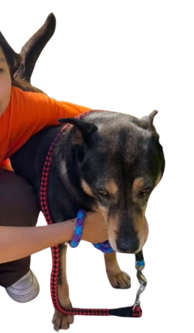
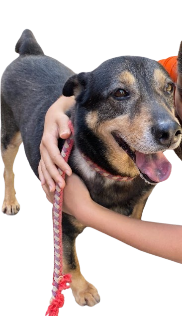

Joy
Joy
My dog: Will ༉‧₊˚.




.png)
Basic information
Name: 威爾(Will)
Sex: Male
Age: Adult, around 7 years old
Personality: Close to people, stable, friendly, calm
How did he end up in the shelter? Got caught
Previous owner: Idk
Like, dislikes: Idk
Size of the dog: big
Adopting Will is a particular choice. He’s likely easier to manage than some energetic dogs. He’s stable and friendly, most of the old people might not accept energetic dogs, so what they need is a calm partner. Because he’s close to humans, also other dogs, he can provide comfort and warmth to his owner. This makes him suitable for families or individuals who want a peaceful companion.
Will is a dog who’s calm, friendly, and loves being around people. But sadly, he got caught into the shelter. He waits all day for people to take him home. Even though he’s not in a very good environment now, he still trusts people and enjoys being with people. He deserves a family to let him feel safe and loved again. Adopting Will can give him a chance to be loved and you can also have a loyal friend who can always stay with you.